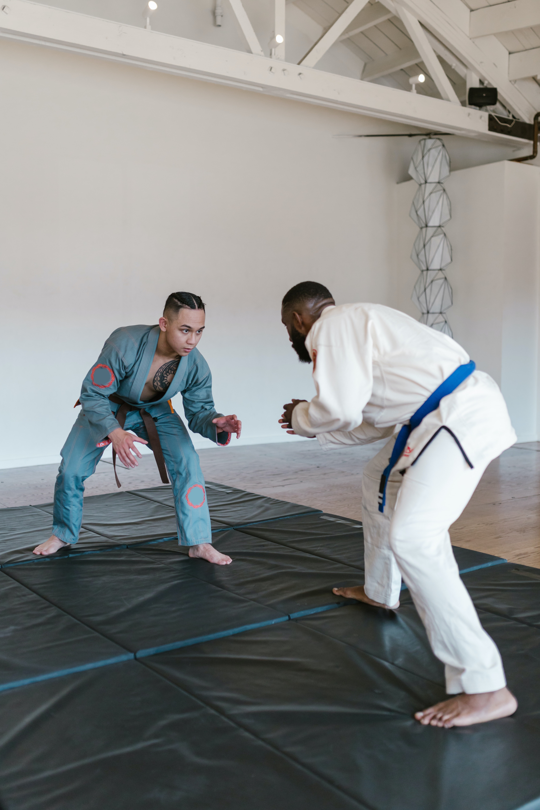

Include Martial Arts, Coding, Traveling, and playing my guitar.

I have been playing guitar on/off for about ten years now, and I started at age thirteen. My grandpa played piano and a bit of guitar, so when I was younger he tried to teach me piano. But I always enjoyed listening to the guitar. I still to this day try to practice when I can playing the guitar by watching youtube videos on how to play songs that I enjoy lisenting to.

I came across a Tik-Tok video of someone who was a Software Engineer and became interested in their journey of how they became a self-taught developer. I thought since I have always thought of myself as mostly as self-taught learner then it was possible for me to do the same. I began watching Youtube videos, practicing on websites like CodeAcademy, and enrolled in a bootcamp called SheCodes.

My dad had trained in Martial Arts for just about twenty-five years and tried to teach me when I was younger. At that age I was not interested and it wasn't until I became older around age sixteen that I had an interest to train. My first art was Muay-Thai, ever since I began training at age sixteen I have stuck with Muay-Thai since. Currently have been training in that art for six years and counting. The second art I have been training in is Jiu-Jitsu, I have been doing that for a little over a year now. I absolutley love Martial Arts and I will be continuing to train for as long as I possibly can for the rest of my life.